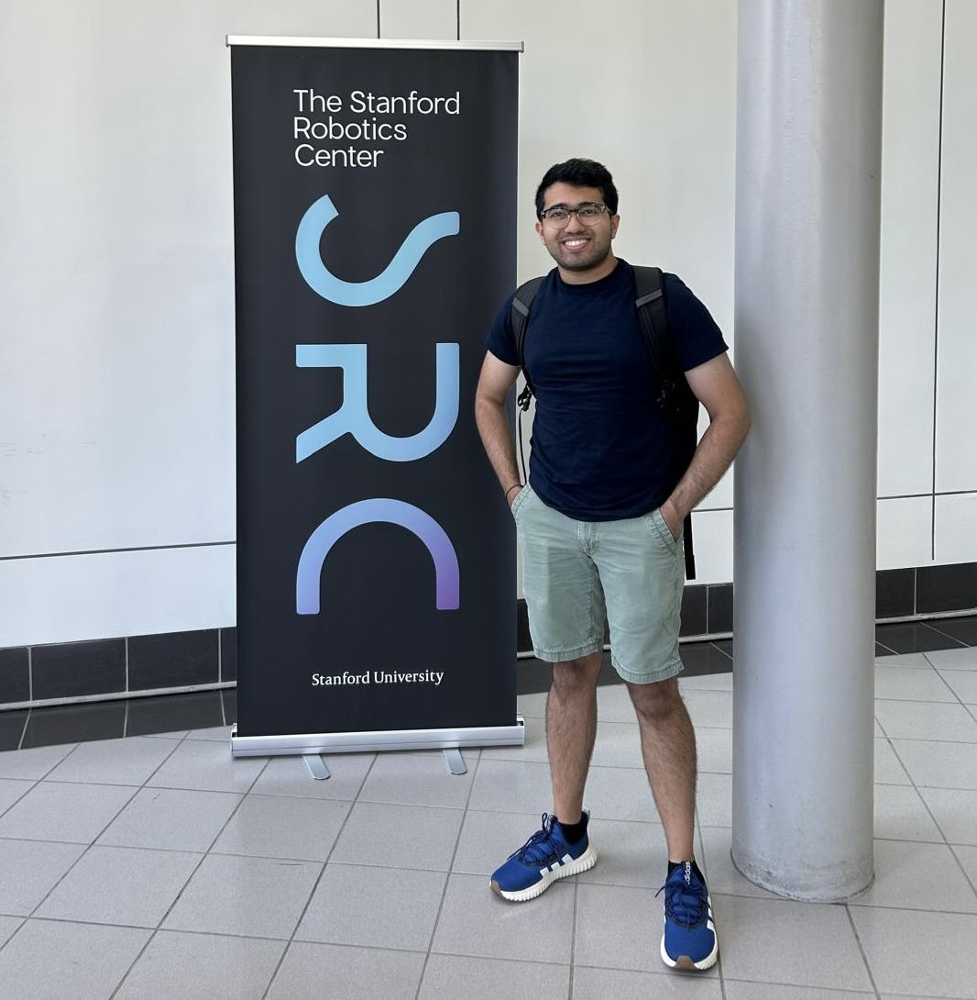
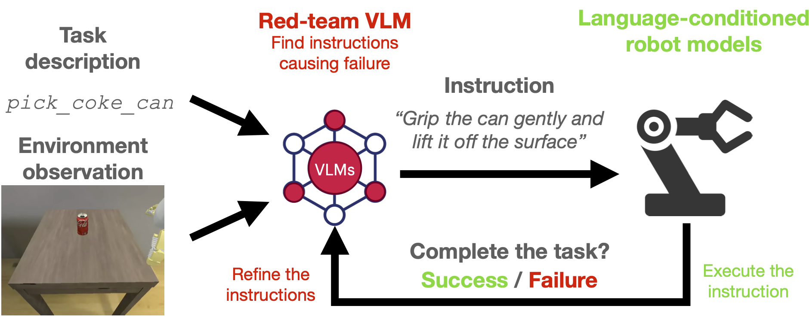

|
Sathwik Karnik I'm a first-year PhD student in the Department of Aeronautics and Astronautics at Stanford University, where I'm advised by Prof. Somil Bansal. My research is graciously supported by a Stanford Graduate Fellowship. Before joining Stanford, I was an engineer at Applied Intuition, where I developed simulation software for safety-critical autonomous systems. Prior to that, I graduated from MIT with a BS and MEng in Electrical Engineering and Computer Science. At MIT, I had the privilege of working with Prof. Pulkit Agrawal and Prof. Leslie Kaelbling. |
 |
{kind=link}
ResearchMy current research interests are in (1) the safety and robustness of generative AI models and (2) robot learning. I'm particularly interested in how we can make autonomous systems more reliable in safety-critical applications. Below are some of my works. |

|
Using Vision Language Models as Closed-Loop Symbolic Planners for Robotic
Applications: A Control-Theoretic Perspective
Hao Wang, Sathwik Karnik, Bea Lim, Somil Bansal. Under Review, 2025. bibtex |

|
Preemptive Detection and Steering of LLM Misalignment via Latent
Reachability
Sathwik Karnik*, Somil Bansal. Under Review, 2025. bibtex |
|  |
Embodied Red Teaming for Auditing Robotic Foundation Models
Sathwik Karnik*, Zhang-Wei Hong*, Nishant Abhangi*, Yen-Chen Lin, Tsun-Hsuan Wang, Christophe Dupuy, Rahul Gupta, Pulkit Agrawal. NeurIPS Safe Generative AI Workshop, 2024. bibtex |

|
Fully Persistent Spatial Data Structures for Efficient Queries in
Path-Dependent Motion Planning Applications
Sathwik Karnik, Tomás Lozano-Pérez, Leslie Kaelbling, Gustavo Goretkin. ICRA, 2022 bibtex |
|
Design and source code borrowed from Jon Barron's website |